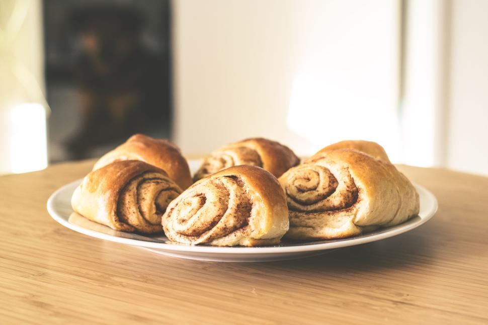

Cinnamon Rolls Recipe

The following is a recipe for cinnamon rolls! The recipe uses simple ingredients like flour, sugar, milk, eggs, and
butter, and cinnamon. It is very easy to follow, and after you are finished, you will have delicious cinnamon rolls
to enjoy.
Ingredients
Dough
- 334g All-Purpose Flour
- 50g Granulated Sugar
- 1/2 Teaspoon Salt
- 180ml Whole Milk
- 43g Unsalted Butter
- 1 Packet Instant Yeast
- 1 Large Egg
Filling
- 43g Unsalted Butter
- 67g Brown Sugar
- 1 Tablespoon Ground Cinnamon
Cream Cheese Icing
- 113g Cream Cheese, Room Temperature
- 28g Unsalted Butter, Room Temperature
- 80g Powdered Sugar
- 1 Teaspoon Pure Vanilla Extract
Steps
- Whisk the flour, sugar, and salt together in a large bowl. Set aside afterward.
- Combine the milk and butter together in a bowl. Heat the butter using a microwave or stove until it reaches 110°F.
- Add yeast into the butter and milk mixture until it has dissolved.
- Add dry ingredients and egg into the wet mixture and stir using a spatula, spoon, or stand mixer. Keep mixing until a soft dough forms.
- Transfer the dough to a floured surface. Using floured hands, knead the dough for 3-5 minutes. If the dough is sticky or
soft, add a little more flour.
- Place the dough in a lightly greased bowl, cover loosely, and let the dough rest for about 10 minutes.
- After 10 minutes, roll the dough out in a 14x8-inch rectangle. Spread the softened butter on top. Mix together the
cinnamon and brown sugar. Sprinkle it all over the dough.
- Roll up the dough to make a 14-inch log. Cut into 10–12 even rolls and arrange in a lightly greased 9- or 10-inch
round cake pan, pie dish, or square baking pan.
- Cover the pan with aluminum foil, plastic wrap, or a clean kitchen towel. Allow the rolls to rise in a relatively
warm environment for 60–90 minutes or until double in size.
- After the rolls have doubled in size, preheat the oven to 375°F (190°C). Bake for 24–27 minutes, or until lightly browned.
- In a medium bowl using a handheld or stand mixer fitted with a paddle or whisk attachment, beat the cream cheese
on high speed until smooth and creamy. Add the butter and beat until smooth and combined, then beat in the powdered sugar
and vanilla until combined. Using a knife or icing spatula, spread the icing over the warm rolls and serve immediately.
- Cover leftover frosted or unfrosted rolls tightly and store at room temperature for up to 2 days or in the refrigerator for up to 5 days.
Back to Homepage